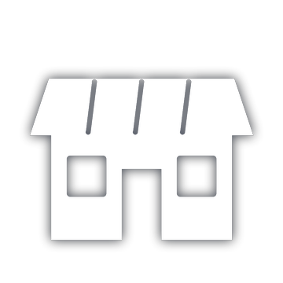

About Us
Skrapyard - Buy, Sell, & Trade
Skrapyard combines a curated parts store with a community that sells, swaps, and auctions. Our goal is to be the beginner-friendly place to get common parts, and the fair place to find the rare ones.
Buying electronic parts usually means choosing between big distributors built for bulk orders and general marketplaces where quality is hit or miss. Beginners struggle to find the right component, and leftover parts from finished projects sit in drawers.